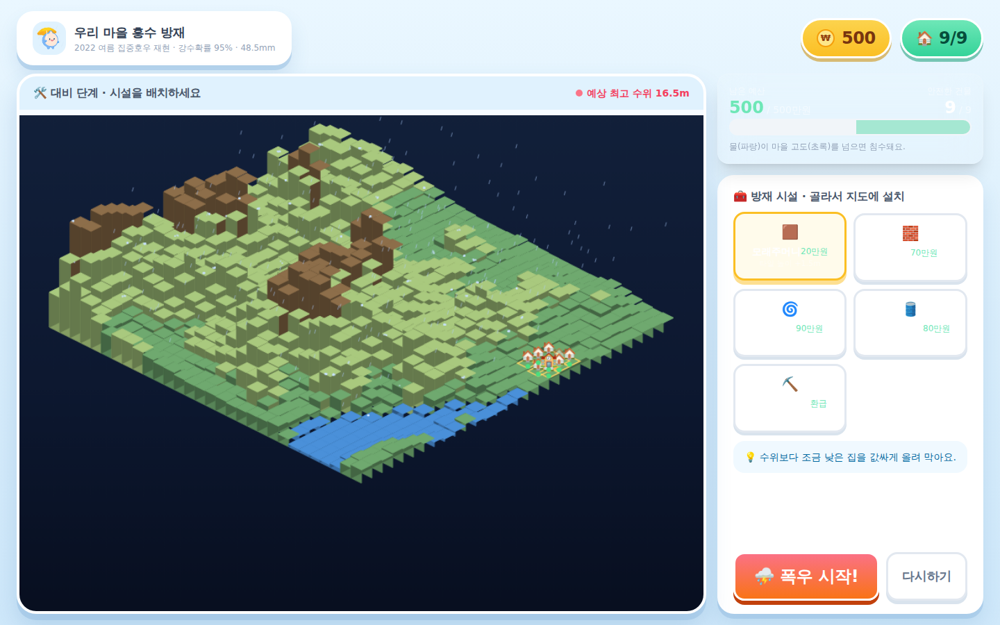
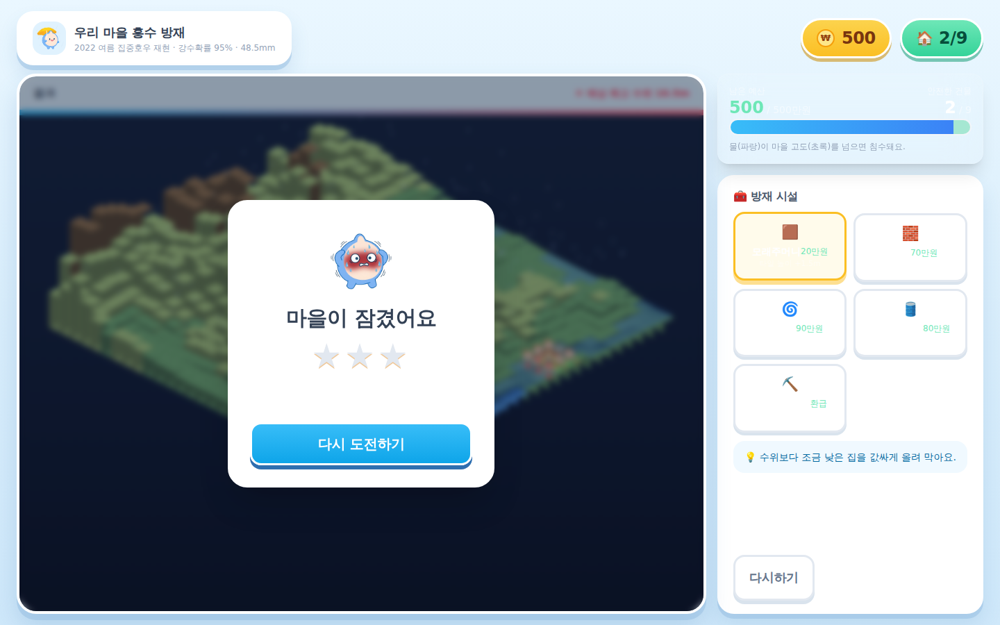

기상·기후 AI 활용 해커톤 · 본선 진출 15팀 교육 세션
서비스 개발
사용자에서 시작하는 서비스 개발
Intro
강사 소개
- AI 15년 경력 — KAIST 전산학 석사 (머신러닝·강화학습)
- 네이버 P2P 스트리밍 특허 3건(미국·일본·한국) · 스캐터랩 핑퐁(이루다 전신) 개발
- 알고리마 CEO — AI 교육 플랫폼으로 연매출 약 10억 달성 · 중기부 AI Championship 우승
- 지금은 AI 스타트업에서 Claude Code로 매일 서비스를 만드는 중
- 이 해커톤을 위해 기상 실측 데이터 기반 교육용 웹 데모를 직접 제작 — 오늘 그 과정을 그대로 공유
오늘 이야기는 이론이 아니라,
우리 팀이 매일 서비스를 만들며 쓰는 방법.
2 / 21
시작하기 전에
무엇이 좋은 결과물을 만드는가
핵심 1
실제로 끝까지
동작하는가
완성되어 작동하는 하나
×
핵심 2
사용자가 직접
경험하는가
조작하며 배우는 경험
둘 다 있어야 좋은 결과물 — 하나라도 없으면 안 됨
오늘 강의 — 이 두 가지를 만드는 다섯 단계 개발 순서와 단계별 산출물
"직접 경험" 근거: Freeman et al. (2014), PNAS — STEM 225편 메타분석, 능동적 학습이 수동적 강의 대비 성취 향상·낙제율 감소 · Chi & Wylie (2014), ICAP, Educational Psychologist
이 대회에서의 중요도: 두 기준은 심사 배점 상위 2개 항목과 일치 — 실현 가능성 30 + 체험·참여형 설계 25 (기상·기후 AI 해커톤 2026 공고문, 2026.6.8)
3 / 21
Roadmap
다섯 단계가 공통으로 묻는 것 — "사용자를 알고 만들었는가"
단계별 산출물 — ① 페르소나 ② HMW 질문 한 문장 ③ 핵심 경험 1개 ④ 동작하는 URL ⑤ 동료 테스트 기록
Stanford d.school·IDEO 디자인 씽킹 5단계(공감–정의–아이디어–프로토타입–테스트)의 해커톤 맞춤 재구성
4 / 21
실제 사례 — 저희 팀 예시
타겟이 정해지자, 나머지까지 전부 결정
이 순서는 이론이 아니라 저희가 이번 해커톤 데모를 만들며 실제로 겪은 일.
주제 후보만 쌓이고 회의가 겉돌다가 — "타겟 대상 · 학습 목표 · 평가 기준"부터 정하자는 결정 직후, 막혔던 회의가 풀림.
| 결정할 것 | 기준이 없을 때 | 타겟·목표가 정해준 답 |
|---|
| 주제 | 온실효과? 재난 대피? 후보만 늘어남 | "재난 상황에서 대피 시간을 버는 법" — 배울 가치가 가장 큰 것 |
| 형식 | 게임? 시뮬레이션? 취향 싸움 | 긴급 의사결정이 목표 → 빠른 피드백 + 시간 제약이 있는 게임 |
| 데이터 | 있으면 좋은 장식 | 실제 침수 사례의 실측 기상 데이터 — 출처까지 명시 |
| 난이도 | 만든 사람만 아는 게임 | 비슷한 게임을 직접 해보니 "뭘 해야 할지 모르겠다" → 첫 화면에서 걸러냄 |
형식·데이터·난이도가 취향이 아니라 타겟과 목표에서 나온 사례
한 팀의 사례(n=1)일 뿐 일반 법칙 아님 — 여러분 팀에서도 같은지 직접 확인해볼 것.
5 / 21
STEP 1 · 사용자
누구를 위해 만드는가
여러분의 사용자는 누구입니까
여러분이 만드는 건 웹페이지가 아니라, 교육 콘텐츠를 들을 한 사람의 배움 경험.
아무것도 정할 수 없는 정의
"20~50대 일반 시민"
인구통계는 화면 하나도 결정해주지 못함.
모든 것을 결정해주는 정의
"김하늘 — 지구과학 첫 학기, 고1"
상황 태풍 단원을 막 배운 주말, 스마트폰으로 접속
목표 태풍 진로 예측이 매번 달라지는 이유 이해
불편 교과서·뉴스 설명만으로는 감이 안 오고, 만져볼 것 없음
기능 회의가 길어지면 이렇게 물으세요 — "김하늘이 이걸 보면 바로 이해할까?"답이 "아니오"면 제외. 페르소나는 문서가 아니라 팀의 의사결정 도구 — Alan Cooper·Kim Goodwin, 『About Face』 (self-referential design 방지).
페르소나의 축은 목표 — "a persona is always defined by her goals" (Alan Cooper). 상황·불편은 목표를 구체화하는 보조 요소.
예시 인물(김하늘)은 이해를 돕는 가상 인물 — 기준은 각 팀이 개발계획서에 이미 정의해 제출한 사용자이며, 이 단계의 일은 새로 정하기가 아니라 그 사용자를 이 수준까지 구체화해 검증하는 것.
6 / 21
STEP 1 · 사용자
가장 흔한 함정
함정 — "내가 곧 사용자"라는 착각
여러분은 기상 전문가. 그리고 바로 그 전문성이
사용자 이해를 가로막는 가장 큰 장애물.
전문가에게는
"850hPa 일기도"
매일 쓰는 일상 용어
처음 배우는 사람에게는
암호
첫 화면에서 이탈하는 원인
이것이 지식의 저주 — 한번 알고 나면, 모르던 때의 막막함은 다시 떠올리지 못함.
처방은 하나: "이 정도는 다 알겠지"라는 확신이 들수록, 만들기 전에 물어보기.
Camerer, Loewenstein & Weber (1989), "The Curse of Knowledge in Economic Settings", Journal of Political Economy
7 / 21
STEP 1 · 사용자
사용자 조사, 오늘 당장 가능
사용자는 옆자리에 있고, 5명이면 충분
질문 1
"최근 뭔가 배울 때 가장 지루했거나 어려웠던 순간은?"
질문 2
"그때 어떻게 해결했어요? 검색? 동료? 포기?"
질문 3
"OO를 처음 배울 때 뭐가 제일 막막했어요?"
"이런 기능 있으면 쓰실 건가요?" — 이 질문은 금지.거의 모두가 예의상 "좋네요"라고 답함. 미래의 의향이 아니라 과거의 경험을 물어야 나오는 진짜 답. — Rob Fitzpatrick, 『The Mom Test』 (2013)
주요 사용성 문제의 대부분은 5명 테스트에서 발견
Nielsen Norman Group (2000) — 점심시간 한 번으로 충분한 사용자 조사.
8 / 21
STEP 2 · 문제 정의
진짜 문제에서 나오는 독창성
불편을 한 문장의 질문으로
인터뷰에서 들은 불편
"태풍 진로 예상도가 발표 때마다 달라지는데, 왜 그런지는 아무도 안 알려줘요."
문제 정의 (How Might We)
"어떻게 하면 김하늘이 예측의 불확실성을 직접 조작하며 체감하게 할 수 있을까?"
규칙은 두 개뿐.
① 주어는 언제나 사용자 — "[사용자]가 [원하는 상태]가 되려면?"
② 해결책을 미리 정하지 않기 — "앱을 만들자"는 문제 정의가 아니라 결론.
How Might We — Min Basadur(P&G) 고안, IDEO 디자인 씽킹 프로세스로 확산
문제 정의 역시 개발계획서에 이미 제출한 것 — 이 단계의 일은 새로 쓰기가 아니라, 인터뷰로 그 정의가 실제 불편과 맞는지 검증하는 것.
9 / 21
STEP 3 · 핵심 경험
가장 중요한 것
해커톤의 적은 실력 부족이 아니라 기능 욕심
떨어지는 팀 (예시)
기능 7개 × 60%
지도도 퀴즈도 차트도 있는데
어느 것도 제대로 동작하지 않음
붙는 팀 (예시 — 운영진 데모)
기능 1개 × 100%
"수위 vs 고도" 판단 하나가
DEM 데이터부터 방재 배치 화면까지 끝까지 동작
'기능 1개'는 화면 하나가 아니라 기상 데이터 → 로직 → 체험 UX가 끊기지 않고 이어진 한 줄기.
운영진 데모 「우리 마을 홍수 방재 게임」은 DEM 고도 → 침수 판정 → 방재 배치 체험이 그 한 줄기.
"사용자가 딱 한 가지만 경험할 수 있다면, 그것은 무엇인가?"
답은 이미 계획서에 있음 — 심사까지 통과한 핵심 기능에 전념할 것. 버린 기능은 발표 때 '다음 계획'으로.
Eric Ries, The Lean Startup (2011) — MVP: 적은 기능에 집중해 빠르게 검증. '7개×60%', '1개×100%' 수치는 통계가 아니라 이해를 돕기 위한 예시.
10 / 21
STEP 4 · 체험 설계
조작이 곧 학습
조작해야 생기는 배움
"앙상블이란 …이다" 세 문단보다, 버튼 한 번에 진로 50개가 퍼지는 화면.
읽는 자료가 아니라 조작하는 체험인지는, 화면에서 직접 확인 가능.
| 어디서 | 체험이 자료가 되는 실패 신호 |
|---|
| 첫 화면 | 긴 설명문이 먼저 나와 스크롤해야 시작 가능 — 10초 안에 뭘 누르면 되는지 보여야 함 |
| 화면 안 | 보기만 하는 차트·영상 — 손 댈 곳(슬라이더·지도 클릭·시나리오 선택)이 없으면 체험이 아니라 자료 |
| 끝난 뒤 | "그래서 내가 뭘 배웠지?"라는 질문만 남음 — 방금 배운 것을 한 문장으로 확인시켜 줄 것 |
확립된 방법론이 아니라, 강사가 이번 데모를 만들며 쓴 점검 목록 — 각 항목은 심사위원의 화면에서 그대로 재현되는 실패 신호.
11 / 21
STEP 4 · 개발
Claude Code 실전
프롬프트에 사용자부터
기능만 말하면
Prompt태풍 정보 웹페이지 만들어줘
누구를 위한 것인지 모른 채, 어디서나 본 듯한 일반적인 페이지가 나옴.
사용자를 담으면
Prompt지구과학 첫 학기인 고1 김하늘이 태풍 예측의 불확실성을 체험하는 페이지를 만들어줘. 사용자는 태풍 단원은 배웠지만 수치예보는 처음이야.
(1) 지도에서 태풍 위치를 드래그하고 (2) '앙상블 실행'을 누르면 진로 50개가 부채꼴로 퍼지고 (3) 결과를 한 문장으로 요약해줘. 전문 용어엔 눈높이 설명 한 줄씩.
페르소나에 따라 달라질 수 있는 어투·난이도·설명량
STEP 1~3에서 정리한 사용자·문제·핵심 경험이 그대로 프롬프트 재료. persona prompting 효과는 신생·조건부 연구(과제별 상이) — 두 프롬프트를 직접 A/B로 비교해 확인 권장.
12 / 21
STEP 4 · 개발
완성도를 만드는 루프
작게 만들고, 김하늘의 눈으로
1
작게 요청
한 번에 한 가지. "전부 다 만들어줘"는 디버깅 지옥
→
2
사용자 눈으로 확인
"김하늘이 처음 열면 뭘 눌러야 할지 알까?"
→
3
구체적으로 수정
무엇이 왜 문제인지 사용자 관점으로
반복
| 모호한 요청 | 사용자 관점의 요청 |
|---|
| "더 좋게 만들어줘" | "학생은 '앙상블'을 몰라. 버튼 옆에 한 줄 설명 붙여줘" |
| "디자인 예쁘게" | "빔프로젝터로 볼 거라 글자가 작아. 본문 1.5배 키워줘" |
자주 배포할 것. 내 화면에서 되는 것과 심사위원이 여는 URL은 별개.
13 / 21
STEP 4 · 개발
시작 전 10분 세팅
규칙은 CLAUDE.md에, 진행은 GitHub에
CLAUDE.md — 팀의 규칙 파일
프로젝트 폴더에 만들어 두면, AI가 매 대화 시작 때 먼저 읽는 파일. 개발계획서를 기준으로 삼는 규칙을 적을 것 — 매번 다시 설명할 필요가 없어지고, AI가 계획서 밖으로 벗어나지 않음. 참가자 배포용 CLAUDE.md 템플릿 제공.
운영진 데모 레포의 실제 CLAUDE.md (발췌)# 콘텐츠 개발 가이드
- docs/PLAN.md(개발계획서)를 먼저 읽고, 기획 범위를 벗어나지 않는다
- 구현이 계획과 달라지면, 임의로 진행하지 말고 PLAN.md를 먼저 갱신한 뒤 개발한다
- 재미(게임 요소)와 학습 목표는 같은 행동에서 동시에 발생하도록 설계한다
- API 키는 .env로만 관리하고 코드에 하드코딩하지 않는다
GitHub — 버전 저장·복구 (시간이 되면)
① 커밋 = 되돌릴 수 있는 저장 시점. 큰 작업이 끝날 때마다 저장해 두면, 뭔가 깨져도 "방금까지 되던 버전"으로 언제든 복구.
② 팀원과 나눠 만들 때 서로의 작업을 안전하게 합치는 통로.
③ 명령어를 몰라도 됨 — AI에게 "커밋해줘", "아까 되던 버전으로 되돌려줘"라고 말로 요청 가능.
코딩 경험의 차이를 줄여주는 세팅.
AI가 코드를 쓰는 동안, 사람의 역할은 사용자와 계획을 지키는 것 — 전공과 무관하게 누구나 할 수 있는 일.
14 / 21
STEP 5 · 검증
완성도 리허설
심사장 리허설 — 동료가 첫 사용자
심사장에서는 옆에서 설명해줄 수 없음.
덜 만들어졌을 때 보여주는 것이 진짜 검증.
규칙 1
링크만 주고
설명 금지
입이 근질거리는 그 순간이 바로 고칠 지점.
규칙 2
막혀도 돕지 말고
관찰
어디서 멈칫하는지, 뭘 먼저 누르는지가 수정 우선순위.
규칙 3
끝나면 질문
"뭘 배웠어요?"
답이 우리가 의도한 배움과 일치하면 학습 효과 검증 완료.
다 고치지 말 것 — 여러 명이 공통으로 걸린 1~2개만
고치고 다시 5분 테스트 — 반복이 이 방법의 핵심.
15 / 21
Summary
다섯 단계 = 완성도 있는 결과물
→
→
→
4
체험·개발
직접 조작하는 체험 + 페르소나 프롬프트
→
이 다섯 단계는 한 번 지나가는 절차가 아니라 해커톤 내내 도는 바퀴.
사전개발 기간(7.23~8.20) 동안 이 바퀴를 여러 번 돌리는 것이 목표.
16 / 21
심사 기준
심사 기준은 5단계를 돌면 충족
| 심사 항목 (배점) | 어느 단계에서 만들어지는가 |
|---|
| 실현 가능성 (30) | STEP 3–5 — 핵심 경험 1개를 100% 완성하고, 심사위원이 URL로 열면 바로 동작 |
| 체험·참여형 설계 (25) | STEP 4 — 직접 조작하는 체험. 보기만 하는 차트·영상은 체험이 아님 |
| 주제 적합성 (20) | STEP 1–2 — 어떤 대상이 어떤 수업·교육 맥락에서 쓰는지, 사용자 정의에서 나옴 |
| 아이디어 독창성 (15) | STEP 1–2 — 인터뷰에서 발굴한 진짜 불편은 다른 팀이 베낄 수 없음 |
| 학습 효과 (10) | STEP 2·5 — 학습 목표 한 문장 + "뭘 배웠어요?" 동료 검증으로 확인 |
별도의 심사 대비 불필요
배점이 큰 실현 가능성(30)·체험형 설계(25)가 곧 STEP 3–5 — 오늘 배운 순서 그대로.
심사 항목·배점 출처: 기상·기후 AI 해커톤 2026 공고문(2026.6.8) — 서류·본선 동일 5개 항목, 100점 만점
17 / 21
개발계획서
계획서는 지키는 문서
개발계획서대로 구현했는가도 심사 대상
서류 심사를 통과시킨 개발계획서는 제출로 끝나는 문서가 아니라, 본선에서 결과물과 나란히 놓고 대조되는 약속.
| 계획서에 적은 것 | 본선에서 확인되는 것 |
|---|
| 개발 단계·기능 | 적은 기능이 실제로 동작하는가 |
| 기상 데이터 1종 이상·활용 계획 | 그 데이터가 화면의 체험까지 이어지는가 |
| 1개월 내 완성할 핵심 기능 | 핵심 기능 1개가 100% 완성됐는가 — 가장 중요 |
| 기술 스택·AI 도구 활용 단계 | 적은 스택·도구 그대로 구현했는가 |
기능 하나라도 완성 — 최우선 과제
계획서는 이미 확정·심사 통과된 문서 — 계획과 다른 구현은 실현 가능성(30점) 대조에서 불이익을 감수하는 선택.
왼쪽 항목은 실현 가능성(30점)의 4요소 — 기상·기후 AI 해커톤 2026 공고문(2026.6.8)
18 / 21
개발계획서 · 운영진 데모 실물
계획서의 문장이 화면의 기능이 된 실제 예
운영진 데모 「우리 마을 홍수 방재 게임」 — 개발계획서(PLAN.md)의 교육 효과·로직·디자인이 화면에 구현된 대응.

대비 단계 — 시설 배치 화면 (실제 캡처)

결과 화면 — 별점·침수 건물 수 (실제 캡처)
| 고려한 것 | 계획서(PLAN.md)에 쓴 것 | 실제 데모 화면에서 |
|---|
| 교육 효과 | Piaget 구체적 조작기 — 시간 제한 없음, 누적 점수 없이 별점(★ 0~3)·예산은 학습 제약 | 무제한 배치 탐색 + 침수 건물 수·별점(★)·예산 표시 |
| 로직 | 침수 판정 한 줄 — (고도+시설) < 수위 − 0.3m | 실측 DEM 고도가 게임 엔진으로 동작 |
| 디자인 | 지형색(자연색)·신호색(신호등) 색상 축 분리 + 색약 아이콘 병기 | 지형색·안전색 축 분리 구현 — 색약 아이콘·3색 신호는 후속 구현 과제 |
계획서의 한 문장마다 "화면 어디에 있는가"에 답할 수 있을 것
구현하며 계획과 달라진 점은 PLAN.md를 갱신해 반영(데모 레포 CLAUDE.md 0항) · 데모는 운영진 예시로, 본선 팀 아이디어와 무관
19 / 21
최종 제출물
해커톤 최종 제출물 체크리스트
- ① 구동 가능한 URL — 로그인·결제 없이 크롬에서 누구나 바로 조작 가능 (Vercel·GitHub Pages 등)
- ② 소스 코드 zip — 구글 폼 업로드, node_modules·빌드 산출물 제외
- ③ 주요 프롬프트 세션 — AI 활용 근거가 되는 대화를 .md/.txt로 내보내 zip 업로드
- ④ README 문서 — 실행·배포 방법 + 라이브러리·이미지·폰트·기상 데이터의 출처·라이선스 명시
- API 키·비밀값 노출 없음 — 코드·저장소·배포 페이지 어디에도. 노출 시 실격
기술 깊이(데이터·AI)와 사용자 경험, 둘 다 있어야 제출물
프롬프트 세션이 AI 활용의 증빙, README의 데이터 출처가 기술 근거 — 화면만으로는 부족함.
20 / 21
Checklist
우리 팀 점검 리스트
- 우리 사용자를 한 문장으로 정의 가능 — 상황·목표·불편 포함
- 문제 정의가 HMW 질문 한 문장으로 정리됨
- 핵심 경험은 하나 — 버린 기능 목록까지 정리
- 페르소나가 프롬프트에 포함됨
- 팀 밖의 동료 1명이 설명 없이 끝까지 사용 완료
21 / 21